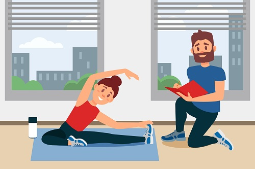

Resume
Full Stack Software Developer
- Intensive 6 months, Full -Time Software Development Bootcamp with immersive, lab-based learning in HTML5, CSS3, JavaScript.
- Created projects by implementing Entity Relationship Diagrams ERD for planning.
- Utilized version control with Git and Github for group and individual projects.
- I also used CSS and Bulma framework to style my web applications.
Personal Trainer
- Helping clients develop short- and long-term goals.
- Analysing client behaviour and the client’s abilities.
- Giving advice on nutrition, health and lifestyle changes.
- Helping clients with their workouts and advising them about important safety concerns.
- Recording and creating reports of client’s progress.
- Creating workouts that are safe for the client to replicate.
Healthcare Provider 2019-2021
- Assisted with each client's activities of daily living.
- Administered medications and took vitals at indicated times.
- Aided with physical therapy exercises for improvement of muscle coordination and range of motion.
